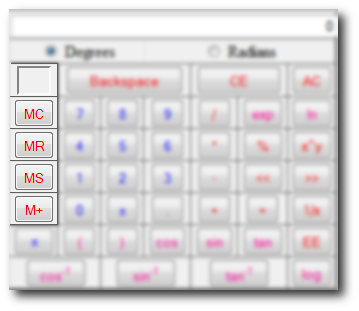
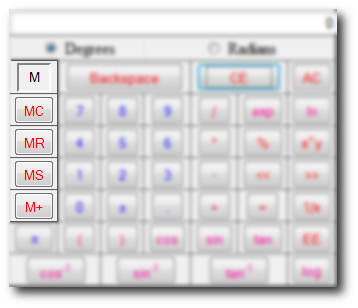

Memory Buttons

In this help topic you will learn how to use the memory functions of the Scientific Calculator. At the top you should recognize the memory indicator (see Deletion Buttons). Click on the word memory indicator to see its definition.Now before you can use the memory functions you must learn what its buttons mean. Look below for explanations:
- The empty box at the top is known as the memory state. It "indicates" if it has value stored in memory by showing an "M" in its center.
- MC (Memory Clear) Clears the memory and takes the "M" out of the memory indicator
- MR (Memory Recall) Takes the equation out of memory and adds it to the end of the Equation Display **See examples for a better explanation
- MS (Memory Store) Calulates and then stores current Equation into memory to be later recalled. Also a large "M" will appear inside of the memory indicator to show a value has been stored.
- M+ (Memory Plus) Takes the value stored in memory, calculates and takes the currently Displayed equation, and adds them both together while storing the answer once again into memory.
Example 1 (Storing in Memory):
- Type in 45
- Hit MS
- Your memory indicator should have an "M" like the one below

Exampe 2 (Recalling Memory):
- Type in 45
- Hit MS
- Now type in + (your Display should look like "45+")
- Hit MR
- You should get 45+45
- Hit Enter (Return) and your answer should be 90
Note: If you did not type in the + symbol then you would have gotten 4545. So don't for get to put an equation symbol before hitting MR
Example 3 (Adding to Memory and then Clearing it):
- Type in 45
- Hit MS
- This time hit M+
- Now type in + (your Display should look like "45+")
- Hit MR
- You should get 45+90
- Now hit MC to clear the memory and you memory indicator should be empty like the picture below